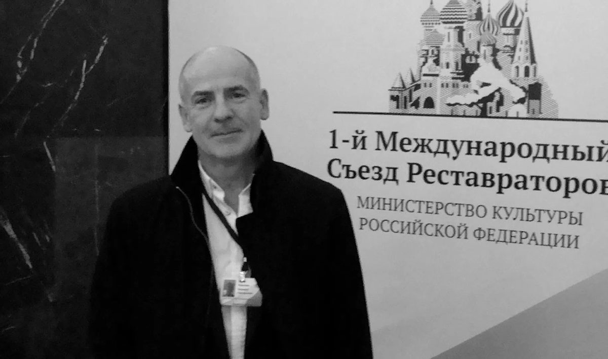

Многим жителям Выборга известно, какая жестокая трагедия произошла в августе 2021 года в семье известного реставратора Валерия Кожухаря. Ситуация оказалась трагичной не только для семьи Валерия и Ариадны, но и для всего общества в целом, поскольку вседозволенность и беспринципность иных, граничащая с беззаконием – суть катастрофы, произошедшей в Выборге и за его пределами – поставило под удар руководителей предприятий, магазинов, общепита Выборга и Выборгского района Ленинградской области. Тогда же внезапное несанкционированное вторжение посторонних лиц обрушило бизнес, подкосило здоровье, бросило тень на репутацию, а затем отняло и саму жизнь. Мир потерял талантливого реставратора. И СМИ сыграли не последнюю роль во втаптывании в грязь авторитетной семьи. Искусственный интеллект агрегаторов СМИ сделал свое черное дело, раздув гипотезу о нападении до невообразимых размеров. И судьи, вероятно, использовали тексты СМИ для обвинительных приговоров. Люди, которые казались друзьями, в одночасье стали безучастными мимо прошедшими прохожими. Жаль, что тогда Семье никто не помог.
Из Искового требования о возмещении морального вреда в связи с противоправными, вводящими в заблуждение действиями, распространением в средствах массовой информации сведений, не соответствующих действительности, порочащих честь и достоинство Рода и Семьи.
Настоящее исковое требование о возмещении дебиторами морального вреда предъявляется членами семьи Кредитора-Истца Ариадны Сергеевны Бессоновой и за погибшего супруга Валерия Григорьевича Кожухарь, в связи с публикациями в СМИ недостоверной, опорочивающей информации, наносящей вред Семье, Роду, профессиональной репутации стороны Истца. Истцы пострадали физически и морально после целой череды неправомерных противоправных действий со стороны Ответчика: группы лиц- представителей средств массовой информации, направленных против рода Кредиторов, против их честного имени, бизнеса и имущества, начиная с лета 2021 года по настоящее время, вероятно, по сговору с заинтересованными лицами. Поскольку конституционное право на охрану достоинства личности распространяется не только на период жизни человека, оно обязывает государство создавать правовые гарантии для защиты чести и доброго имени умершего, сохранения достойного к нему отношения, что, в свою очередь, предполагает обязанность компетентных органов исходить из необходимости обеспечения близким родственникам умершего доступа к правосудию и судебной защиты в полном объеме, как это вытекает из ст. 46 Конституции Российской Федерации во взаимосвязи со ст. 6 Конвенции о защите прав человека и основных свобод.
В результате распространения недостоверных и порочащих репутацию сведений истцам причинены моральные, нравственные страдания и нанесён материальный ущерб от разрыва отношений с партнёрами (в результате ознакомления с очерняющей информацией в СМИ). Ответчиками СМИ в период с 4 августа 2021 года по настоящее время распространены недостоверные и порочащие сведения относительно инцидента, произошедшего 3 августа 2021 года в городе Выборг, что существенно повлияло на профессиональную, общественную деятельность и личную жизнь Истцов, привело к гибели одного из Истцов.
Недостоверные сведения, наряду с несанкционированным использованием личного архива фотографий из социальной сети vkontakte.ru, не соответствуют действительности и порочат честь, достоинство и деловую репутацию Истцов. В большинстве источников указано, что первоисточником информации являются пресс-служба прокуратуры Ленобласти/или пресс-служба регионального управления СК РФ. Данную информацию Истцам не представляется возможным проверить. С связи с вышесказанным, данные юридические лица ИНН 7802015780 и ИНН 7701903677 привлекаются к участию в данном гражданском судопроизводстве в качестве третьих лиц.
От даты, когда сторона Ответчика веерно разместила недостоверную порочащую информацию, со слов якобы пресс-службы прокуратуры Ленобласти и/или пресс-службы регионального управления СК РФ, прошло уже более трех лет. Шок, стресс, смерть близкого человека, потеря бизнеса, клевета, очернение репутации, череда конфликтов и последствия различной степени тяжести – вызваны в большей части участием СМИ, которые вероятно были заинтересованы в уничижении Истцов, создав им колоссальный моральный вред, на компенсацию которое направлено данное требование.
Ответчиками по данному иску являются ООО "47 новостей", АКЦИОНЕРНОЕ ОБЩЕСТВО "АЖУР-МЕДИА", в период 4 августа 2021 года по настоящее время в нескольких статьях распространены недостоверные и порочащие сведения относительно инцидента и нападения, устроенного гражданкой Новосельцевой Е.П. в присутствии двух женщин, предположительно, сотрудниц прокуратуры города Выборга на момент события. «Благодаря» электронным СМИ, для широкой общественности появилась однобокая (но с некоторыми вариациями) трактовка скандального инцидента, произошедшего 3 августа 2021 года в Ленинградской области, городе Выборг в кафе «Папарацци».
Сторона Ответчика – электронные СМИ, два из которых находятся по одному и тому же адресу (город Ленинград (Санкт-Петербург), ул. Зодчего Росси д.1/3, 6 подъезд), вероятно не имеют печатного издания.
Сторона Ответчика не только спровоцировала серию вбросов ложной информации, повлекшей за собой массу негативных последствий для Истцов, но в целом пренебрежительно отнеслась ко всему обществу в целом, что должно в будущем отразиться на степени неотвратимого наказания за содеянное ею зло. Вместо того чтобы оказаться рядом, провести журналистское расследование, дать оценку произошедшему инциденту с правовой точки зрения, привлечь общественность для недопущения несправедливых, мошеннических и/или коррупционных действий со стороны должностных лиц, замещающих государственные должности, они своими противоправными действиями усилили роль катализатора разрушения бизнеса Истцов, разрушения их имиджа порядочных людей, создали почву для эскалации конфликтов в общества и усиления криминальной составляющей не только города Выборга, но и страны в целом.